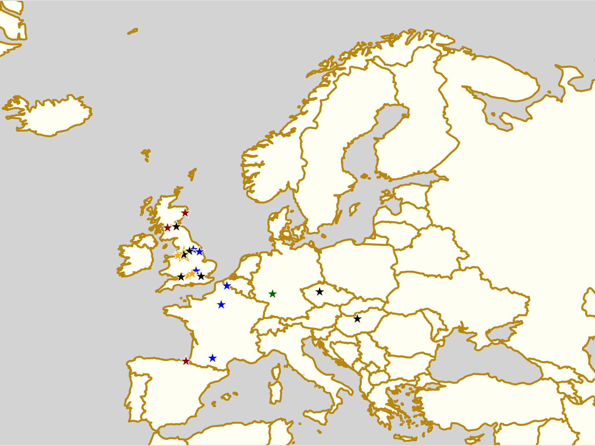
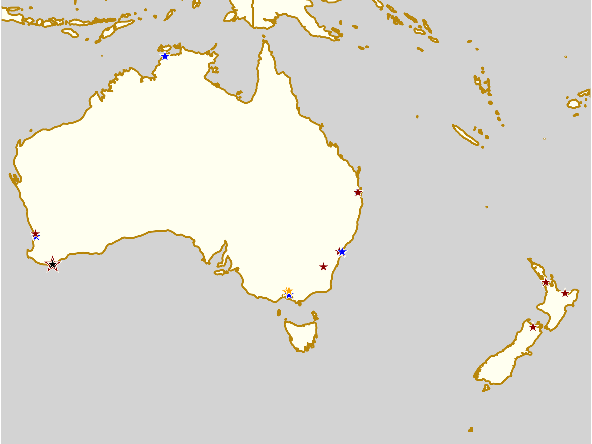
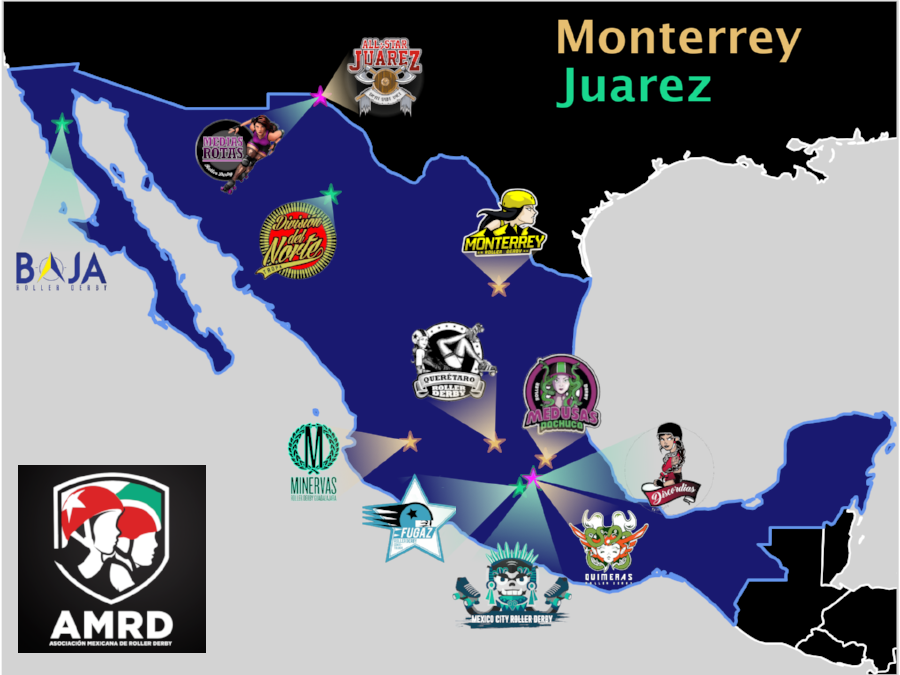
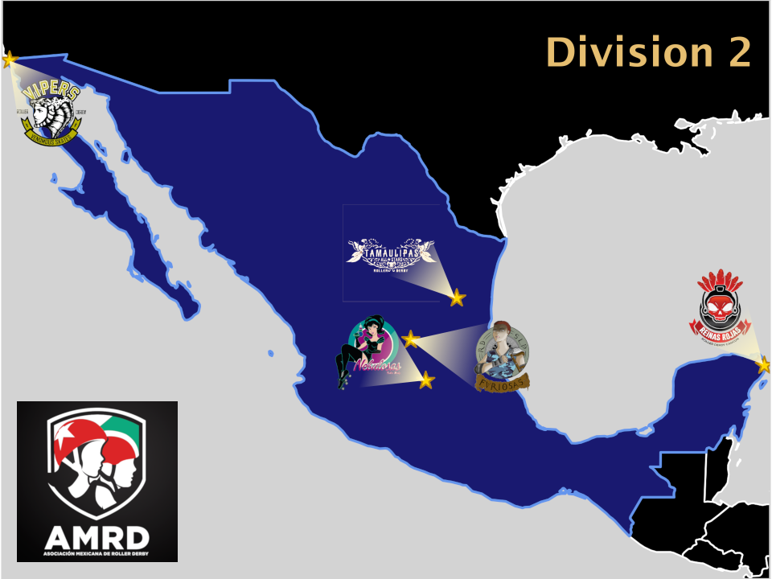
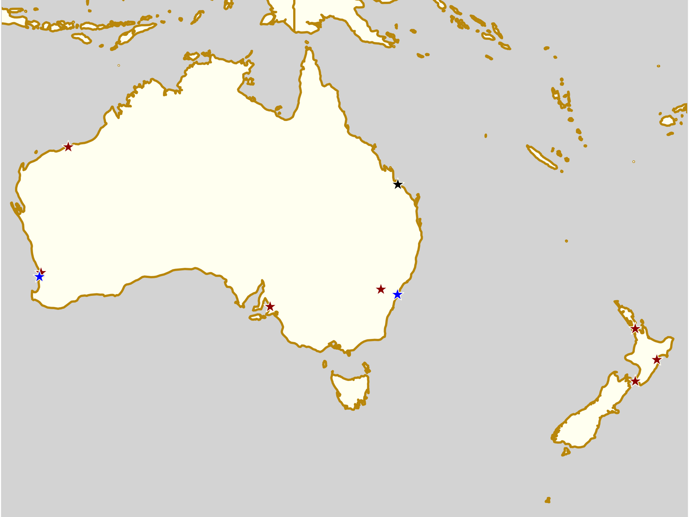
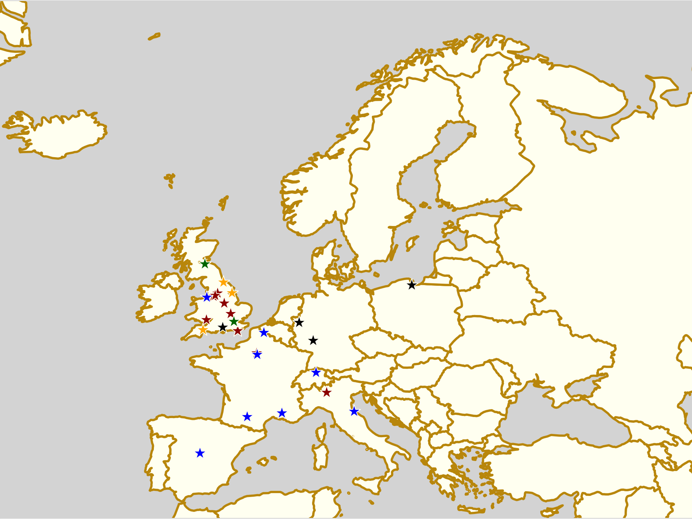
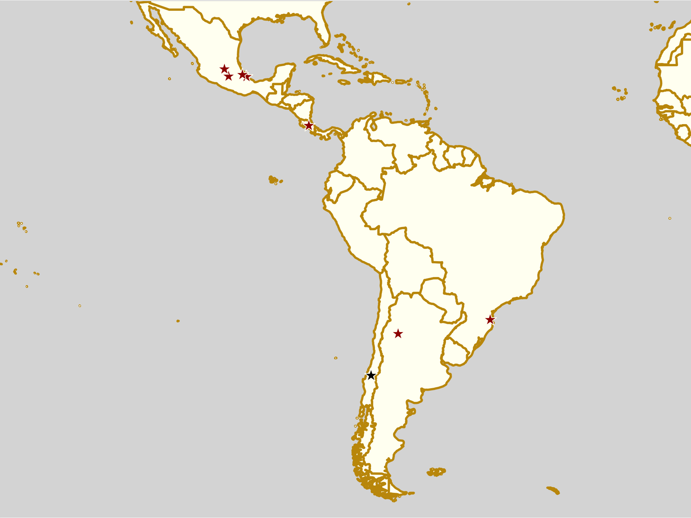
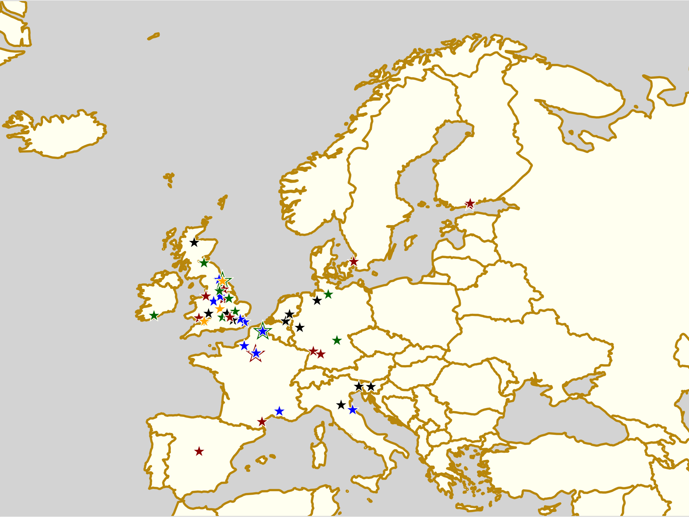
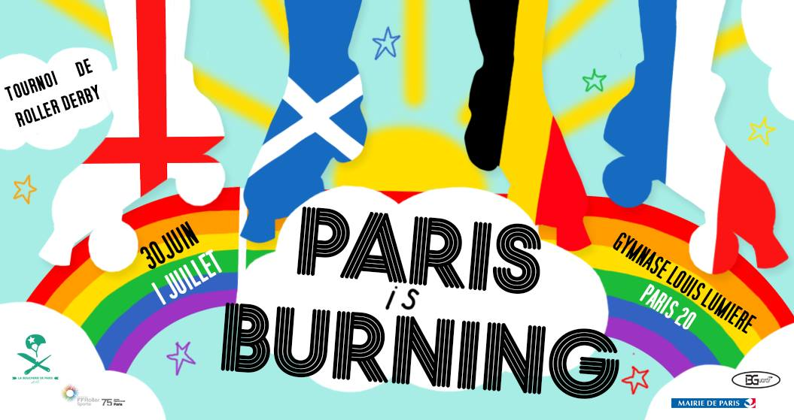
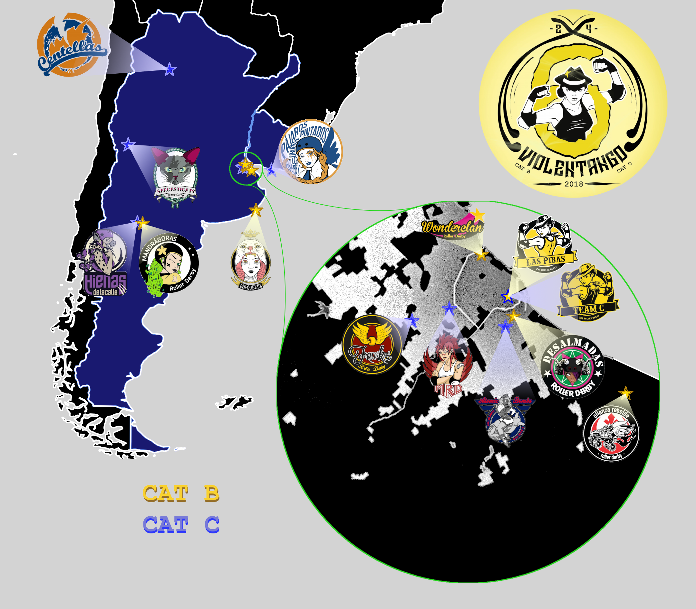

Non-US/Canadian Derby Roundup:28th/29th July Edition
Predictions of bouts are from FTS, if possible, and from our own SRD Rank where FTS cannot make predictions (for example: Latin America, or non-MRDA men’s bouts). (SRDRank also has recent WFTDA rankings, including the 31st June ranking, as well as SRDRank, and allows you to make predictions from them.)
If we’ve missed you from our roundup, please let us know! [Or add yourselves to FTS and/or Derbylisting]
(Note: we're especially likely to be missing items this week, as Facebook's response to the Cambridge Analytica scandal has resulted in them turning off large parts of the services we use to automatically collate events for this article. We don't think we've missed too much, but...)We're trying a new colour coding this week, to differentiate BOUTS from RECRUITMENTS and OPEN SCRIMs, and BOOTCAMPs.

Scotland
A bit of a change from last week, here there's two double headers to choose from, at different ends of the country...- Fri, Leith: Not strictly Derby, but there's a ton of cross-over, so: Chicks in Bowls Scotland host a "Quad Skate Night" at Transgression Park [EVENT]
-
Aberdeen: Granite City Roller Derby host a double header for both their teams [EVENT]
- Fight Hawks (Aberdeen B) versus Bonnie Colliders (Dundee B) [FTS]
- Northern Fights (Aberdeen A) versus Vagine Regime UK [FTS]
- Glasgow: Glasgow Roller Derby host a double header of bouts, both for their A team! [EVENT]
United Kingdom
With British Champs 2018 season almost over, except for promotion playoffs, it's a lot quieter in the UK boutwise. There's a lot of other roller derby events, mostly in the way of open scrims!- Wed, Hull, England: Hulls Angels Roller Derby host a recruitment evening [EVENT]
- Fri, Swindon, England: Wiltshire Roller Derby host another of their monthly open mixed scrims. These are Open To All genders, with an alternating gender policy per jam, to accommodate all requirements [EVENT]
- Leeds, England: Double Threat Skates hosts another of their pop-up shops "Up North", hosted by Leeds Roller Derby [EVENT]
- London, England: announced middle of the week, London Rollergirls host an Open Skate session [EVENT]
- Manchester, England: Manchester Roller Derby hosts a fundraising quiz night, raising funds for New Wheeled Order to attend MRDA Champs in Portland, Oregon. [EVENT]
- Sun, Bletchley, England: Rebellion Roller Derby host their free "try derby" intake day (also allowing signup to their training course, starting today) [EVENT]
- Sun, Bristol, England: Bristol Roller Derby are hosting a charity skate all the way from Bath to Bristol, raising funds for Integrate UK (giving young people for social change) [EVENT]
- Sun, Liverpool, England: Liverpool Roller Birds host a "Summer Scrim" open scrimmage event, open under WFTDA gender policy (women + non-binary/gender expansive) [EVENT]
- Sun, Manchester, England: Manchester Roller Derby host their regular Mixed Open, All-Gender Scrimmage [EVENT]
- Sun, Oxford, England: Oxford Roller Derby host their monthly Open Scrim for July. This open scrimmage is Open To All genders. [EVENT]
- Sun, York, England: York Minxters are holding an intake session for the next season of the team. Open for potential skaters or officials. [EVENT]
Europe
The amount of derby is very slowly decreasing in Europe, as we slip into the end of the season. Probably because of Rollercon, there's only one tournament in mainland Europe we're aware of this week!- Thurs+Tues, Lille, France: Roller Derby Lille continue their series of Open Training sessions for anyone who wants to see what derby is all about. [EVENT]
- Thurs, Paris, France: La Boucherie de Paris hold another of their weekly series of open sessions for people to try Roller Derby [EVENT]
- Thurs, Pibrac, France: The Harpies Braqueuses host another of their open sessions for interested potential members [EVENT]
- Fri, Prague, Czech Republic: Prague City Roller Derby are co-hosting a Roller Disco at Kasana, with a 70s/80s theme [EVENT]
- Fri-Sun, Prague, Czech Republic: Not strictly a derby thing, but there's a lot of cross-over - Chicks in Bowls Czech Republic and Chicks in Bowls Poland are co-hosting a summer meetup for the weekend. [EVENT]
- Fri-Sun, Darmstadt, Germany: The Riot Rollers host the 6th of their yearly "Weekend on Wheels" bootcamps, open to All Genders. There are both beginners sessions (run by D.Boom (Team Germany Men, bench coach for Wirral Roller Derby) and Lula Doom (Wirral Roller Derby / Wirral Men's Bench) ), and intermediate sessions (run by Hanna P. (Crime City Rollers A, Team Sweden) and Lindsay Watson (Auld Reekie Roller Girls) ) [EVENT]
- Sat+Wed, Lille, France: Lille Roller Girls hold their regular recruitment sessions for interested skaters (or officials) [EVENT]
- Budapest, Hungary: Budapest Roller Derby Project are one of the co-organisers of the 2-monthly Roller skating meetings at Campona görkorcsolya. [EVENT]
-
Donostia-San Sebastián, Spain: Easo Avengers host a triple header round robin with mixed gender teams from across Northern Spain [EVENT]
- Txipi Rollers ("Easo Avengers & Moluscos Donostia + moluscos del ancho mar": "Easo Avengers & Donostian molluscs + molluscs from the wider sea") [Mostly Donostia/San Sebastián mixed gender + guests]
- Sereas Bravas ("Sirenas y Sirenos con acento gallego desde Vigo" : "Male and female sirens, with a Galician accent from Vigo") [Mostly Vigo mixed gender, plus guests from Madrid etc]
- El Equipo Este ("Bucaneros desertores de puertos varios" : "Pirate deserters from various ports" [Mixed gender, mixed origin]
- Sun+Wed, Châteauneuf-de-Gadagne, France: the Rabbit Skulls of Avignon continue to host their open training sessions for interested skaters [EVENT]
- Tues, Paris, France: Panam Squad continue to run their open recruitment sessions, weekly, for those interested in joining the team [EVENT]

Pacific
There's quite a bit of derby in the Pacific this weekend, with both the Open Season and 5x5 Roller Derby Champs returning with fixtures, plus plenty of home-teams games across Australia; New Zealand is also packed with events this weekend!- Thurs, Armadale, WA, Australia: the Dread Pirate Rollers hold the second of their two Q/A sessions for intake of potential new members. Open To All Genders. [EVENT]
- Fri, Albany, WA, Australia: Albany Roller Derby League co-hosts a "pizza and skate" event, open to not just skaters but skateboards, and anyone who likes pizza [EVENT]
-
Canberra, ACT, Australia: Canberra Roller Derby League host their 4th home teams game of 2018 [EVENT]
- Black 'N' Blue Belles versus Surly Griffins
-
Kellyville, NSA, Australia: Inner West Roller Derby League host the 5th Round of the 5x5 Roller Derby Championship 2018 [FTS tournament][EVENT]
- South Side Derby Dolls (Sydney) versus Varsity Derby League (Canberra)
- Sydney Roller Derby League versus Blue Mountains Roller Derby (Katoomba)
- Hawkesbury/Hills Area Roller Derby versus Maitland Roller Derby
- Inner West Roller Derby (Sydney) versus Central Coast Roller Derby United (NSW coast)
-
Mansfield, QLD, Australia: Round 5 of the 2018 Open Season tournament returns this weekend, with 5 more games and a bonus men's derby bout! [FTS tournament][EVENT]
- Banshees (Brisbane City Rollers) versus Runaways (North Brisbane Rollers) [Div 2]
- Cherry Bombs (North Brisbane Rollers) versus Punk Blockers (Brisbane City Rollers A) [Div 1]
- Rumble Bees (Sun State Roller Derby) versus Zombees (Sun State Roller Derby) [Div 1]
- East Coast Derby Dolls versus Valley Valkyries (Tweed Valley) [Div 2]
- Ninja Stars (Coastal Assassins) versus Violet Femmes (Brisbane City Rollers [Div 2]
- Hitmen/Scartel (X/Perth M) versus ??
-
Albany, WA, Australia: Albany Roller Derby League also host their last "Rec League" home teams bout of the season this weekend [EVENT]
- Cold Snaps versus Storm Fronts
-
Morley, WA, Australia: Perth Roller Derby host the 4th bout in their home teams series [EVENT]
- Bloody Sundaes versus Apocalipstiks
- Auckland, New Zealand: Pirate City Rollers are hosting a triple header "Derby Marathon" event! [EVENT]
- Nelsons Bay, New Zealand: The Sirens of Smash host a double header of roller derby [EVENT]
-
Whakatane, New Zealand: Whakatane Roller Derby host a double header [EVENT]
- Team Crazy Legs NZ versus Huka Dolls (Taupo A) [FTS?]
- Whakatane Roller Derby versus Auckland Roller Derby [FTS]
- Sun, Dee Why, NSW, Australia: Northern Beaches Roller Girls host a "Derby Info Day" for those interested in finding out more about the sport. [EVENT]
- Sun, Sydney, NSW, Australia: South Side Derby Dolls host the 4th round of their 2018 Home Season [EVENT]
- Resistance Rollers versus B.B.SK8TERS
- Sun, Darwin, NT, Australia: Darwin Roller Girls host a free info night for those interested in the sport (you can also sign up for their 10 week training course here) [EVENT Flyer]
- Sun+Wed, Brisbane, QLD, Australia: Sun State Roller Derby host an "intake information session" for those wanting to find out more about the sport [EVENT]
- Sun, Carrum Downs, VIC, Australia: South Sea Roller Derby host their "Freshie Intake" day for new skaters wanting to join the league [EVENT Sun] [EVENT Wed]
- Sun, West Footscray, VIC, Australia: WestSide Derby Dollz host a "Sunday of Scrimmages", open scrimmages of all levels. [EVENT]
- Freshie training
- Junior Scrim
- "Red" Scrimmage (beginners - Low Contact)
- Amber + Green Scrimmage (reduced contact / full contact)
- Sun, Albany, WA, Australia: Albany Roller Derby League see out the weekend with their regular Open Skate. [EVENT]
- Tues, Eltham, VIC, Australia: Diamond Valley Roller Derby Club host an Open Scrimmage event (using the same levels as for WestSide's Sunday of Scrimmages) [EVENT]

Latin America
We think we've found all the roller derby in Latin America, this weekend, but there's always a higher chance of us missing things here. Please let us know if we have! This weekend, the action we know about is mostly in Argentina, with Metropolitan in Chile the only other action.- Fri, Mar del Plata, Argentina: MDQueens host their July scrim [EVENT]
- Sun, Avellaneda, Argentina: Cerberos Roller Derby host a "triangular animal" - a triple header round robin, with undisclosed other participants - presumably with an animal theme. [EVENT] Possibly cancelled?
- Sun, La Plata, Argentina: Chat Noir host a double header of roller derby [EVENT]
- Chat Noir (La Plata) versus Bastardas Roller Derby Tigre (Buenos Aires Zona Norte) [FTS]
- Kamikazes Roller Derby (Berazategui) versus ?? [FTS?]
- Sun, Santiago, Chile: Metropolitan Roller Derby host a "pichanga" (open scrimmage) to raise funds for their B team to attend the Chilean Torneo X (about which we have an article coming up this week). [EVENT]
- Sun, Bogotá, Colombia: Central Derby DC Roller Derby play Rock N Roller Queens as part of the 5th Torneo Distrital Bogotá [FTS][EVENT Flyer]

Africa and Middle East
As well as the continuing Funskate events in Pretoria, across the other side of SA, Durban Derby continues to run great social events!- Thurs, Pretoria, South Africa: As always, P-Town Roller Derby host their weekly open Funskate event, a chance to put on skates (and also maybe join P-Town)[EVENT]
- Sun, Durban, South Africa: Durban Derby host a "Roller Derby Beach Skate" social event [EVENT]
Elsewhere
- Fri-Sun, Las Vegas, Nevada, USA: Of interest because of the large number of attendees from outside North America, the world's largest Roller Derby convention, Rollercon is this weekend. [EVENTs Page]
- For the first time, this Rollercon hosts one of the new WFTDA World Summit Satellite events, a chance to talk to WFTDA leadership about the direction of the sport. [EVENT]
Mexican National Championships 2018
The Mexican Torneo Nacional de Roller Derby, run by the Asociación Mexicana de Roller Derby, is one of the longest running continuous national tournaments in Roller Derby. Since 2012, the tournament has selected teams from across Mexico for multiple fixtures to determine a champion; and in more recent years, a full ranking system (derived from WFTDA rating calculations) has been applied for cut-offs into the Division 1 and 2 categories.
The tournament proper begins in August of each year, and so we are rapidly approaching the 2018 edition. In anticipation of this, we're bringing you a quick overview of the event, and the teams involved.
The top 12 teams in the AMRD ranking, at the time of selection, are sorted into Division 1, with the chance to play for the Championship. In this case, one team (Ovejas Negras) was forced to withdraw from the competition this year - allowing the 13th ranked team to replace them.
Division 1 is run as two "playoff" fixtures, each with 6 teams, selecting the top placed teams from each in the Final fixture, to play for the top spot. This year, the Playoffs will be hosted in Monterrey (by Monterrey Roller Derby), and Juárez (by Medias Rotas Roller Derby).
 Division 1 Playoff Teams for AMRD Nationals 2018, coloured by Playoff location
The Division 1 teams cover almost all of Mexico, except the extreme East, with their distribution roughly matching the population of the country.
Monterrey Roller Derby and Mexico City Roller Derby have both won the Championship at least twice over the past 6 Nationals, with Mexico City's wins in both 2016 and 2017. However, at this point in the season, fellow Mexico City based team, Quimeras (of Liga Cuidad de Mexico Roller Derby, LCMRD) are just pipping them in the rankings, making this a pretty contested championship. The alternating seed placement for Playoffs has placed the Quimeras in Monterrey's group, and outside MCRD's group, which will give the current champions some breathing room until the finals themselves.
Third in the rankings so far, All-Stars Juárez, have never won the Championship to date, and will be hoping to pick up a win for the northernmost city in the AMRD. Their placement in a group with Quimeras, Monterrey and another former Champion, Minervas, will make this a tough battle. Their fellow Juárez team, Medias Rotas, have relatively less experience, and a weaker season (we have only 2 bouts on record this year in Flat Track Stats, against fellow D1 teams Division del Norte and Minervas).
Of the remaining teams, Baja California's Baja Roller Derby and Guadalajara's Minervas are the only other teams to have won the championship, and are seeded into different groups. Minervas have the challenging group with a total of three former champions (including themselves), whilst Baja face the most Mexico City centric group - although at least their travel costs will be moderated, given the closer proximity of Juárez. With Baja currently the second lowest rated and ranked team in Division 1, it will be a big ask for them to make the qualifier for the Finals - Minervas are having a much better year (in a close 5th place), but qualification will require them to defeat All-Star Juárez in their home city...
We should not forget the currently fourth-place Division del Norte, of Chihuahua - whilst they haven't won the Championship yet, their current rating places them close to Juárez All-Stars in third (and just ahead of former Champions Minervas). As the second strongest team in their group, they are very likely to qualify - but could easily cause disruption in the finals if they do.
The unexpected addition to the Division 1 list, Fugaz Roller Derby, of Toluca+Mexico City, replace Ovejas Negras, effectively getting a free promotion from Division 2 for the tournament. We assume that they'll be anxious to capitalise on the opportunity to prove themselves against their group - as a relatively new team (formed in the past year from Animas [Toluca] and Valkirias [Mexico City]), they have everything to prove.
Playoffs (Division 1): August 11th-12th (Monterrey) [EVENT], August 25th-26th (Juárez) [EVENT] Final: 18th-20th November (EMEXRD, Mexico City).
Division 2, meanwhile, sees the next 5 [14 to 19 rank] teams fight it out in a single fixture to determine the top of their group.

Division 2's teams cover the extremes of Mexico's geography, from Tijuana's Vipers, on the USA/Mexico border to the extreme West, to Cancùn's Reinas Rojas, to the Eastern extent of the country. The remaining three teams are clustered in the densely populated central region of Mexico; Tamaulipas, Nebulosas of Queretaro, and Furiosas of San Luis Potosí. Tamaulipas Roller Derby, as well as being one of the newer teams to the Nationals (being formed in March this year, as a collaboration between Fairy Dust Roller Derby and Jaibronas Roller Derby), is also hosting Division 2 this year, in October. So far, their performance has placed them at the bottom of the rankings for Division 2, but they have been improving rapidly as their team and coaching gels. With the home-team advantage, they could be a wild-card here.
Short of an upset, however, the safer money is on a very close battle between Cancún's Red Queens and Queretaro's Nebulosas' space-adventurers for the top spot in the Division. The two teams are exceptionally closely rated in the official AMRD ratings - although FTS has very little data about the Red Queens to day - and so this should be an exciting matchup.
Division 2: October 6th+7th, hosted by Tamaulipas Roller Derby.
Non-US/Canadian Derby Roundup:21st/22nd July Edition
Predictions of bouts are from FTS, if possible, and from our own SRD Rank where FTS cannot make predictions (for example: Latin America, or non-MRDA men’s bouts). (SRDRank also has recent WFTDA rankings, including the 31st June ranking, as well as SRDRank, and allows you to make predictions from them.)
If we’ve missed you from our roundup, please let us know! [Or add yourselves to FTS and/or Derbylisting]
(Note: we're especially likely to be missing items this week, as Facebook's response to the Cambridge Analytica scandal has resulted in them turning off large parts of the services we use to automatically collate events for this article. We don't think we've missed too much, but...)We're trying a new colour coding this week, to differentiate BOUTS from RECRUITMENTS and OPEN SCRIMs, and BOOTCAMPs.

Scotland
As far as we know, the majority of the Scottish Derby this weekend is in open scrims, in Aberdeen...- Thurs, Aberdeen: Granite City Roller Derby host an Open To All open scrim! [EVENT]
- Aberdeen: Granite City Brawlers host a "double header" of open scrimmage (as a warm-up for the Silver City Cup) [EVENT]
United Kingdom
British Champs continues to provide a good chunk of the bouts this weekend (each fixture here is the last in its division), but there's a lot of other roller derby events, including London Rollergirls' ongoing pre-min-skills bootcamp series!- Fri, Ipswich, England: Suffolk Roller Derby host one of their regular Open Mixed Scrims (Open To All, and also open to all) [EVENT]
-
Blackpool, England: Blackpool Roller Coasters host the final fixtures in British Championships Tier 4 West [FTS Tournament][EVENT]
- Arcadia Roller Derby (Manchester) versus North Cheshire Victory Rollers
- Blackpool Roller Coasters versus Railtown Loco Rollers (Crewe)
-
Durham, England: Durham City Rolling Angels host the final fixtures in British Championships Tier 4 North [FTS Tournament][EVENT]
- Durham Roller Derby versus Spa Town Roller Derby (Harrogate)
- Durham City Rolling Angels versus Sunderland Roller Derby
-
Herne Bay, England: Kent Men's Roller Derby host the final fixtures in the British Championships Tier 3 Men's South [FTS Tournament][EVENT]
- Dorset Knobs Roller Derby versus East Anglo Smacksons (Norwich M)
- Kent Men's Roller Derby versus Suffolk Roller Derby
- London, England: London Rollergirls host the second edition of Minimum Skills, Drills and Thrills, their pre-min-skills bootcamp series. This edition focuses on Stepping, Hopping, Weaving and Transitions [EVENT]
-
London, England: London Rollergirls also host an exciting double-header bout [EVENT]
- Pink versus Black (London A+B+friends exhibition game)
- Batter C Power (London C) versus Bath Roller Derby [FTS]
-
Mansfield, England: Lincolnshire Bombers Roller Girls host the final fixtures in the British Championships Tier 3 East [FTS Tournament][EVENT]
- Roller Derby Leicester versus Mansfield Roller Derby
- Lincolnshire Bombers Roller Girls versus Hulls Angels Roller Derby
- Sun, Loughborough, England: Leicestershire Dolly Rockit Rollers host a double-header of open-subscription games with a "Revenge of Space Dinosaurs On Skates!" theme [EVENT]
- Tyrannosaurus Specs versus BronchoSaurus (WFTDA-gender-policy bout, rookie/intermed level)
- Brute-a-Saurus versus Terror-Dactyl (MRDA-gender-policy bout)
- Sun, Wallasey, England: Wirral Roller Derby host the final fixture for British Championships Tier 2 (rescheduled) [FTS Tournament][EVENT]
- Lincolnshire Rolling Thunder versus Teesside Skate Invaders
- Wirral Pack Animals versus Oxford Men's Roller Derby
- Sun, Neath, Neath Port Talbot, Wales: Swansea City Roller Derby host a single header event [EVENT]
- Swansea City Roller Derby versus Hull's Angels Roller Derby [FTS]
- Tues, Merthyr Tidfil, Wales: Merthyr Roller Derby launch themselves as a new league, by holding an open scrimmage [EVENT]
Europe
The amount of derby is very slowly decreasing in Europe, as we slip into the end of the season. There's still time for one big event, however, as Euro Derby Con 2018 hits Barcelona, along with its satellite WFTDA World Summit and WFTDA-recognised officiating clinic!- Thurs, Vienna, Austria: Vienna Roller Derby host their July Recruitment Day; explicitly open to skaters and officials (WFTDA-gender policy on skaters). [EVENT]
- Thurs+Sun+Tues, Lille, France: Roller Derby Lille host more of their Open Training sessions, for any interested potential skaters to visit and potentially join. [EVENT]
- Thurs, Paris, France: La Boucherie du Paris host another of their open training sessions [EVENT]
- Thurs-Sun, Barcelona, Spain: As we trailed last week, the 2018 edition of Euro Derby Con hits Barcelona for much of this week, with a huge selection of challenge bouts, on- and off-track training, and many many seminars and talks on a lot of interesting topics.[EVENT]
- Thurs-Sun, Barcelona, Spain: As part of Euro Derby Con, there is also a WFTDA Officiating Clinic, run by internationally-qualified and experienced officials: Petti, Jens Hötger and Dire Wolff .[EVENT]
- Thurs-Sun, Barcelona, Spain: Also as part of Euro Derby Con, there is a WFTDA World Summit Satellite event - a chance for both WFTDA- and non-WFTDA- members to discuss the direction that the community is going, and where it is now, including a chance to address WFTDA leadership itself. [EVENT]
- Thurs, Madrid, Spain: MadRiders, Madrid's Men's Team, have a second recruitment date today [EVENT]
- Fri, Rimini, Italy: The Stray Beez open training "on the beach" continues! [EVENT]
- Sat+Wed, Lille, France: Lille Roller Girls host their ongoing recruitment/try derby days [EVENT]
-
Mannheim, Germany: The Delta Quads host a double header of derby action, including a Bundesliga Division 2 bout! [FTS Tournament][EVENT]
- Delta Quads F(l)ight Crew (Mannheim B) versus Graveyard Queens (Köln) [Bundesliga Div 2]
- Delta Quads (Mannheim A) versus "all-gender mixed team"
-
Munich, Germany: Munich Rolling Rebels host a double header of derby action, including a Bundesliga Division 1 bout! [FTS Tournament][EVENT]
- Munich Dynamite (Münich A) versus Roller Derby Dresden (A) [Bundesliga Div 1]
- Municorns (Münich B) versus Trackoons (Dresden B) [FTS]
-
Greystones, Ireland: East Coast Cyclones host a single header event [EVENT]
- East Coast Cyclones (Wicklow) versus Dublin Roller Derby C [FTS]
- Sat-Sun, Örebro, Sweden: Örebro Roller Derby host "Öre Derby Con", a two-day bootcamp event with additional fun (like swimming and barbecuing and outdoor skating). Classes by members of Norrköping, Örebro, Västsvenska and Stockholm Roller Derby. [EVENT]
- Sun, Rovaniemi, Finland: Rovaniemi Roller Derby host another of their open try-derby events ahead of the start of signup for their Beginners Course in August [EVENT]
- Sun+Wed, Chateauneuf-de-Gadagne, France: the Rabbit Skulls of Roller Derby Avignon continue with another open training session for those interested [EVENT]
- Mon, Ourense, Spain: Jabatas Roller Derby host an Open Day for potential new skaters for their team. No kit required, open to all genders. [EVENT Flyer]

Pacific
There's quite a bit of derby in the Pacific this weekend, with the Eastern Region Super League returning, and the very exciting, and still a bit mysterious "Derby Night 4x4" series beginning in Tokyo.- Wed, South Hedland, WA, Australia: North West Roller Derby host their first ever intra?league bout [EVENT]
- intra?league bout?
- Fri, Tokyo, Japan: The "Derby Night Committee" host the first fixture in the DN4x4 Tournament, a Japanese tournament with WFTDA- and MRDA-gender policy teams. [FTS tournament][EVENT Flyer]
- "Derby Night" rules - 15 minute games, 3 blockers + 1 jammer only, 15 second penalties, 1 minute jams.
- Kamikaze Badass Roller Derby Tokyo versus Neon Roller Monsters (Tokyo)
- ? v ?
- Fri, Sydney, NSW, Australia: Western Sydney Rollers host the second intake into their Learn To Skate and Play Derby program [EVENT]
- Fri, Gladstone, QLD, Australia: Gladstone PCYC Roller Derby host a themed ("Roll Back To the Future) Roller Disco. [EVENT]
- Fri, Auckland, New Zealand: Pirate City Rollers' 4th home teams game is today [EVENT]
- Dead Wreckoning versus Blackheart Bruisers
-
West Bathurst, NSW, Australia: Central West Roller Derby host the 2nd fixtures of the Eastern Region Super League [FTS Tournament][EVENT]
- Western Sydney Rollers versus Hawksbury/Hills Area Roller Derby
- Central West Roller Derby versus Wollongong Illawarra Roller Derby
- Adelaide, SA, Australia: Adelaide Roller Derby hosts the second-last fixture of their home teams series with a double header [EVENT]
-
Maylands, WA, Australia: WA Roller Derby host a single header [EVENT]
- WayWARDs ("Western Australia") versus Sin City Rollers (Geraldton) + friends
-
Auckland, New Zealand: Auckland Roller Derby League hosts a single header, their first NZ Top 10 Champs game this year [FTS Tournament][EVENT]
- Auckland Bolts (Auckland A) versus Sulphur City Steam Rollers (Rotorua)
-
Napier, New Zealand: Bay City Rollers host a double header [EVENT]
- BCR Iron Maidens versus Whenua Fatales [FTS]
- BCR Twisted Sisters versus Hellmilton Roller Ghouls [FTS]
-
Wellington, New Zealand: Richter City Roller Derby host a double header, including a Top 10 bout [FTS Tournament][EVENT]
- Richter City Roller Derby versus Swamp City Roller Rats (Palmerston North) (Top 10)
- Richter City Home Teams: Comic Slams versus Brutal Pageant
- Mon, Rockingham, WA, Australia: the Dread Pirate Rollers host their new member intake, part 1 - for prospective skaters and officials of all kinds. This is a Q&A style session, no kit needed. [EVENT]

Latin America
We think we've found all the roller derby in Latin America, this weekend, but there's always a higher chance of us missing things here. Please let us know if we have! This weekend, the action we know about is mostly in Brazil and Mexico, with sur5al in the former.- Sat+Tues+Thurs+(Sat), Chíllan, Chile: The Chillanrolleras skating course for juniors 5 to 15 enters its second and final week! [EVENT Flyer]
-
Valdivia, Chile: Announced at kinda the last moment, Roller Derby Valdivia host a triple-header round robin "coed" (All Gender) tournament [EVENT Flyer][EVENT]
- Nativ@s (Nativas/Nativos Roller Derby Temuco mixed team)
- Indomit@s (Roller Derby Valdivia mixed team - Indomitas and Indomitos)
- Rezagados (Valdivia + Puerto Montt mixed team)
-
Mexico City, Mexico: Liga All Blacks Roller Derby host an intraleague bout [EVENT Flyer]
- Malinches Roller Derby (Mexico City/All Blacks) versus Block Division Roller Derby (Mexico City/All Blacks) [FTS]
- Sun, São Paulo, Brazil: Gray City Rebels host the third edition of their Sur5al tournament event [EVENT]
- Sun, Mexico City, Mexico: The Quadtlicues host a single header of derby [EVENT]
- Quadtlicues (MCRD/Mexico City A) versus Tekillerass (LRDCM/Mexico City "B") [FTS]
- Wed, Medellín, Colombia: Spring City Rollers will be at the Tibiri bar's rock night performance by Las Florindas, collecting for their trip to Manizales for the Colombian Nationals. [EVENT Flyer]
Africa and Middle East
As well as the continuing Funskate events in South Africa, the CaiRollers are recruiting again in Egypt!- Thurs, Pretoria, South Africa: As always, P-Town Roller Derby host their weekly open Funskate event, a chance to put on skates (and also maybe join P-Town)[EVENT]
- Cairo, Egypt: the CaiRollers' new season begins, and new skaters can still join the team on Saturday at their open day. [EVENT]
Elsewhere
- Mon-Tues, Feasterville, PA, USA: Of interest to us because of the attendance of Team GB, Europe and Australia, the JRDA World Cup is the third Roller Derby World Cup this year, and the first to feature teams from Europe. This event follows on directly from the JRDA Championships. [EVENT]
Non-US/Canadian Derby Roundup:14th/15th July Edition
Predictions of bouts are from FTS, if possible, and from our own SRD Rank where FTS cannot make predictions (for example: Latin America, or non-MRDA men’s bouts). (SRDRank also has recent WFTDA rankings, including the 31st June ranking, as well as SRDRank, and allows you to make predictions from them.)
If we’ve missed you from our roundup, please let us know! [Or add yourselves to FTS and/or Derbylisting]
(Note: we're especially likely to be missing items this week, as Facebook's response to the Cambridge Analytica scandal has resulted in them turning off large parts of the services we use to automatically collate events for this article. We don't think we've missed too much, but...)We're trying a new colour coding this week, to differentiate BOUTS from RECRUITMENTS and OPEN SCRIMs, and BOOTCAMPs.

Scotland
With two Scottish teams competing down south in British Champs fixtures, the only event at home is a Special Edition Bootcamp in Edinburgh.- Sun, Edinburgh: Auld Reekie Roller Girls/Derby host a special edition of their School of ARRG Knocks bootcamp series, coached by Crime City Rollers (Malmö)/Team Sweden Roller Derby's Hanna P. WFTDA gender policy for on-skates tickets [EVENT]
United Kingdom
British Champs continues to provide a good chunk of the bouts this weekend, but there's a lot of other roller derby events. Perhaps most importantly, this is the weekend of Eastbourne Extreme, the UK's premier entirely-outdoor Derby tournament. Also of some interest is Manchester Roller Derby's double header, as it features the MRDA-policy B team playing their WFTDA-policy A team!- Thurs, Middlesbrough, England: Middlesbrough Roller Derby host another of their open Thursday training sessions, including scrimmage - for all post-mins skaters meeting the WFTDA gender policy [EVENT]
- Fri, London, England: Apex Predators Roller Derby are promoting the UK protests against Donald Trump's state visit to the UK from a Roller Derby perspective. [EVENT]
- Cullompton, England: South West Angels of Terror are holding a mixed scrim birthday celebration for two of their skaters, with a 60s/70s fancy dress theme! Alternate All-Gender and "Women's only" jam format [EVENT]
-
Eastbourne, England: The most extreme outdoor Roller Derby tournament, Eastbourne Extreme, returns for another year (weather permitting!). [EVENT]
- schedule
- Also includes a Chicks in Bowls ramp skating meetup run by Chicks in Bowls Sussex [EVENT]
- Hull, England: Hull's Angels Roller Derby host another of their regular Open To All (All-Gender) mixed ability open scrims! [EVENT]
- London, England: London Rockin' Rollers host the second session in their Summer Bootcamp Series, this time focused on footwork and agility! [EVENT]
- Nottingham, England: Newcastle's Tyne & Fear host a double header pretty far from home base [EVENT]
-
Oldham, England: Rainy City Roller Derby host a double header of A and C team action [EVENT]
- Tender Hooligans (Oldham A) versus The World (open subs team)
- Rainy City Revolution (Oldham C) versus Limerick Roller Derby [FTS]
- Salford, England: Manchester Roller Derby host a double header of action [EVENT]
- Winchester, England: SCR host another closed scrim for those wanting to sign up. [EVENT]
-
Cwmbran, Wales: Riot City Ravens host the British Championships Tier 3 West's final round. With the two Welsh teams tied on wins at the top of the table, this fixture will decide the top of the group - and the bottom with the other bout. [FTS tournament][EVENT]
- Wolverhampton Honour Rollers versus Hereford Roller Derby
- Riot City Ravens (Newport) versus North Wales Roller Derby
- Sun, Bedford, England: Rebellion Roller Derby host the British Championships Tier 2 North final fixtures. These will decide the top and bottom spots in the group, with Rebellion able to challenge for the top spot, and Sheffield+Wirral fighting to avoid the bottom. [FTS Tournament][EVENT]
- Wirral Savage Lillies versus Sheffield Steel Rollergirls
- Rebellion Roller Derby (Bedford) versus Auld Reekie All-Stars Reserves (Edinburgh B)
- Sun, Halifax, England: The Bruising Banditas host the final fixtures in the British Championships Tier 3 North. Newcastle B have an unassailable lead at the top of the table, but 2nd place (and the bottom spot) are still in contention. [FTS Tournament][EVENT]
- Hallam Hellcats (Sheffield) versus Granite City Roller Derby (Aberdeen)
- Bruising Banditas (Halifax) versus Wakey Wheeled Cats (Wakefield)
- Sun, Liverpool, England: Liverpool Roller Birds are holding an open intake day for anyone interested in the sport in any capacity - skating, refereeing, NSOing and more [EVENT]
Europe
The amount of derby is very slowly decreasing in Europe, as we slip into the end of the season. France still has the most fixtures, with Roller Derby Panthers bringing back their Tournament of 6 Regions for a second year!- Thurs, Paris, France: La Boucherie de Paris host their weekly Open Sessions for potential new skaters to find out about derby. [EVENT]
- Thurs, Sun, Tues, Lille, France: Roller Derby Lille host their continuing Open Training session series, for anyone who wants to come along and find out what Roller Derby is like. [EVENT]
- Fri, Duisburg, Germany: Mine Monsters Roller Derby host a celebration of their favourite pub's 5th birthday - and also open their doors to anyone interested in joining their team! [EVENT]
- Fri, Mon, Rimini, Italy: The Stray Beez continue their open training "on the beach" for Summer - guests welcome to find out about the sport. [EVENT]
- Fri, Gdansk, Poland: 3City Piranhas are hosting a Pirate themed Roller disco! [EVENT]
- Sat + Wed, Lille, France: Lille Roller Girls also host their regular summer recruitment series [EVENT]
- Sat-Sun, Saint-Gratien, France: The Roller Derby Panthers host the return of the Tournoi de 6 Regions, a France-wide tournament event with teams representing humorous new divisions of France [EVENT]
- Teams:
- Harder Better Munster Stronger (Vosges/Alsace style cheesemaking regions)
- Autoroute du Soleil (the French Riviera - the A6/Autoroute du Soleil being the main motorway there)
- Terre du Milieu (presumably Central France, with a pun on Tolkien)
- Mont.e Saint.e Michel.e (Normandy?)
- Over The Seas (the overseas territories of France "d'outre de Mer")
- Chocolatine (the South-West region, which calls Pain au Chocolat "Chocolatine" LINK)
- Teams:
- Mainz, Germany: the Maniac Monsters of Mainz host their "Sommerfest" as their 5th Birthday celebration. Barbeque, open skate, and general celebration. [EVENT]
-
Bergamo, Italy: The Crimson Vipers host a roller derby bout with live music from Dan Vapid and the Cheats! [EVENT]
- Crimson Vipers (Bergamo) versus Fearless Bruisers (Innsbruck) [FTS]
- Sun + Wed, Châteauneuf-de-Gadagne, France: The Rabbit Skulls of Avignon are holding more open training sessions over the summer for those interested in trying the sport. [EVENT]
- Mon-Wed, Madrid, Spain: Black Thunders Madrid host three consecutive dates of recruitment for both skaters and officials. Open training sessions and meet the team. [EVENT]
- Mon, Zürich, Switzerland: Zürich City Roller Derby host the first of two dates in their Open Training series, for new skaters to try out the sport and maybe join [EVENT]
- Tues, Paris, France: Panam Squad host another of the summer recruitment fixtures for those wanting to join Paris' MRDA league [EVENT]
- Tues, Pibrac, France: The Harpies Braqueuses host another of their summer open workshops for potential new skaters wanting to try the sport. [EVENT]
- Tues, Madrid, Spain: The MadRiders, Madrid's Men's Team, are recruiting on an open event (repeated Thursday) [EVENT Flyer]

Pacific
There's quite a bit of derby in the Pacific this weekend, as Rum City's Skate of Emergency returns, as does South Side Derby Dolls' TriWizard Tournament, and the Statewide Stampede continues through Victoria.- Sydney, NSW, Australia: South Side Derby Dolls host the return of their annual TriWizard Tournament, a Harry Potter themed triple header round robin, also featuring muggle Qudditch, fancy dress and more [EVENT]
-
Wauchope, NSW, Australia: Port Macquarie Roller Derby League host a single header [EVENT]
- Port Macquarie Breakwall Brawlers versus Outcast Roller Derby [FTS]
- Sat-Sun, Bundaberg, QLD, Australia: Rum City Derby Dolls host the 2018 edition of their Skate of Emergency tournament; a 6 team round-robin tournament over 2 days, plus additional "coed" (All Gender) bout [FTS Tournament][EVENT]
- Teams:
- Gladstone PCYC
- Mountainborough (Toowoomba City Rollers +MRD)
- Tweed Valley Rollers
- Northern Brisbane Rollers
- Rum City Derby Dolls
- FCUR
- Teams:
-
Adelaide, SA, Australia: Adelaide Roller Derby host another game in their home teams series [EVENT]
- Salty Dolls versus Wild Hearses [FTS]
-
Daylesford, VIC, Australia: WestSide Derby Dollz host the 5th round of the 2018 Statewide Stampede [FTS Tournament][EVENT]
- Low Contact (LOCO) scrimmage, All Gender
- Dragon City Derby Dolls (Bendigo) versus East Vic Roller Derby (Bayswater)
- Team Regional Victoria versus South Sea Roller Derby (Melbourne)
- Ballarat Roller Derby League (Delacomb) versus Diamond Valley Roller Derby/Otway Derby Dolls
- WestSide Derby Dolls (West Footscray) versus North East Roller Derby (Wangaratta)
- Victorian Roller Derby League "Top 30 bout"
- Sat, Taupo, New Zealand: For Taupo's Winter Holidays, there's a screening of Pete's Dragon, where the Huka Dolls will be providing popcorn-on-skates service! [EVENT]
- Sun, Taupo, New Zealand: The Huka Dolls also co-host a roller disco for the School Holidays [EVENT]
- Wed, Canberra, ACT, Australia: Canberra Roller Derby League host another of their Vice City Rollers movie nights fundraisers (as their B team are likely to need to travel to the WFTDA Continental Cup). [EVENT]

Latin America
We think we've found all the roller derby in Latin America, this weekend, but there's always a higher chance of us missing things here. Please let us know if we have! This weekend has derby everywhere, with a two-day tournament in Argentina, parties and events in Costa Rica and Brazil, and more bouts, and tournaments, in Mexico!- Thurs (and all week), Veracruz, Mexico: Roller Derby Veracruz continue to participate in the second week of Veracruz' Roller Skate Summer Camp [EVENT Flyer]
- Bout (on Thursday 9th)
- Sat-Sun, La Rioja, Argentina: Roller Derby La Rioja host a two-day tournament and meeting, also as a way to promote the sport in the north-west of Argentina. [EVENT]
- 4 teams (open subscription), round robin
-
Blumenau, Brazil: The Iron Ladies of Blumenau are celebrating their 5th birthday with a double scrimmage event, plus free-skate [EVENT]
- Mixed exhibition bout (full contact)
- Mixed exhibition bout (no contact)
- Sat+Tues+Thurs, Chíllan, Chile: The Chillanrolleras are running a two week skating programme for junior skaters 6 to 15 years old. [EVENT Flyer]
-
San José, Costa Rica: Dark Side Roller Derby host the 4th edition of Rock & Derby, their annual celebration and promotion of music and roller skating sports [EVENT]
- Speed skating races
- Roller? hockey demonstration
- Rollerdance show
- At least one roller derby bout [possibly versus the Catastroficats of Morelia, Mexico]
- Sat+Sun, Querétaro, Mexico: Querétaro Roller Derby hosts "Rock City Deathmatch", a grand tournament (round robin?) featuring the 4 top rated men's teams in Mexico (by 2017 Championships standing) [FTS Tournament][EVENT]
- Crows (Querétaro M)
- Disorder (CDMX M)
- Wheels of Mayhem (Baja California M)
- Deserticons (Chihuahua M)
- Xalapa, Mexico: The Berserkers of Roller Derby Xalapa host a triple header round robin of men's derby, with a "scrimmage" of WFTDA-gender derby too. No event as yet, just a flyer [EVENT Flyer]
- Sun, Metepec, Mexico: The Reptilias of Metepec-Toluca are hosting their next bout (with no Facebook event) [EVENT Flyer]
- Reptilias (Metepec) versus All-Blacks Roller Derby (CDMX) [FTS]


Africa and Middle East
As well as the continuing Funskate events in South Africa, the CaiRollers are recruiting again in Egypt!- Thurs, Pretoria, South Africa: P-Town Roller Derby League host another of their open Funskate events, which are also a chance to meet the team and join up. [EVENT]
- Cairo, Egypt: The CaiRollers host the start of their new season with their open recruitment and practice session (skaters + officials both welcome!) Kit provided with prior notice. [EVENT]
Look Ahead
In our irregular Look Ahead section, we're flagging something from 2 weeks in the future - the European Roller Derby convention, Euro Derby Con!- 19 to 22 July, Barcelona, Spain: Euro Derby Con itself hosts a mix of challenge bouts, training sessions (run by Track Advantage + friends) [EVENT]
- Some very tiny selected Highlights (full schedule here)
- Rule56 have two sessions aimed at Coaches:
- 19th: Minimum skills assessment
- 20th: Euro Derby Coaching Network.
- Maurine Filip hosts a session on "Why are we here, and what does it mean? - Existentialism in Derby", discussing the deeper meaning of our interactions in Derby.
- Lady Trample and Bomba Hache run Ramp classes (of increasing level) each day.
- Missy Rascal is running a series of Artistic skating skill-crossover classes
- Furrrocious runs a class on improved communication on track.
- Rosie Peacock runs a series of classes including Dealing with Difficult Behaviour (coaching), and several aspects of countering the popular "Elemental Jammer" styles throughout the track sessions.
- 19 -22 July, Barcelona, Spain: Co-hosted with Euro Derby Con is a WFTDA Recognised Officiating Clinic, run by Petti (NSO, Eastbourne Roller Derby, Level 3 cert), Jens Hötger (Ruhrpott Roller Girls, Level 2 cert) and Dire Wolff (GO-GO Gent Roller Derby referee, Level 3 cert). [EVENT]
- (These events are spread across the full Euro Derby Con schedule here - and the instructors are also running Seminars too, so don't miss those in addition!)
- 19 - 22 July, Barcelona, Spain: Co-hosted with Euro Derby Con is a WFTDA Roller Derby World Summit Satellite event, allowing WFTDA members and non-members to connect and influence the direction of the sport. [EVENT]
Non-US/Canadian Derby Roundup:7th/8th July Edition
Predictions of bouts are from FTS, if possible, and from our own SRD Rank where FTS cannot make predictions (for example: Latin America, or non-MRDA men’s bouts). (SRDRank also has recent WFTDA rankings, including the 31st June ranking, as well as SRDRank, and allows you to make predictions from them.)
If we’ve missed you from our roundup, please let us know! [Or add yourselves to FTS and/or Derbylisting]
(Note: we're especially likely to be missing items this week, as Facebook's response to the Cambridge Analytica scandal has resulted in them turning off large parts of the services we use to automatically collate events for this article. We don't think we've missed too much, but...)We're trying a new colour coding this week, to differentiate BOUTS from RECRUITMENTS and OPEN SCRIMs, and BOOTCAMPs.

Scotland
The big event in Scotland this weekend is the return of Auld Reekie's School of ARRG Knocks bootcamp series.- Edinburgh: Auld Reekie Roller Girls/Derby host their School of ARRG Knocks "New Beginnings" bootcamp, a just-post-mins bootcamp event run by multiple Auld Reekie + Team Scotland skaters, including Sharlotte Patterson and Bangers![EVENT]
- Inverness: Inverness City Roller Derby host their next quiz night, this one with a RuPaul's Drag Race theme [EVENT]
United Kingdom
British Champs continues to provide a good chunk of the bouts this weekend, but there's a lot of other roller derby events, including double headers, bootcamps (including Junior derby bootcamps), and recruitments.- Thurs, Middlesbrough, England: Middlesbrough Roller Derby start their series of open training sessions for July. Open to mins-passed skaters, WFTDA-gender-policy. [EVENT]
- Thurs, Stoke-on-Trent, England: Stoke City Rollers host their next intake for new skaters (no event) [Sign up webpage]
- Fri, Leeds, England: The Works Skatepark hosts a non-derby-specific Skate Maintenance Skills workshop! [EVENT]
- Fri, London, England: Bermondsey Open Skate host another open skating session - open to all levels (even pre-mins) [EVENT]
- Cambridge, England: Cambridge Rollerbillies host Battle of the Bands, a "pre-mins games day" aimed at building on derby skills (without playing Roller Derby itself). This event is Open To All genders. [EVENT]
- Hereford, England: Hereford Poison Berries Junior Roller Derby, and The Core Skate Hereford, host a fundraising Roller Disco, raising funds for Team GB Junior Roller Derby at the JRDA World Cup. [EVENT]
- Lincoln, England: Lincolnshire Bombinos, Lincolnshire Bombers' Junior team, host a special JRDA Level 2/3 bootcamp with Toots, Team GB Junior Roller Derby head coach. (This is also a fundraiser for Team GB Juniors) [EVENT]
-
Liverpool, England: Liverpool Roller Birds host the next fixtures in the British Champs Tier 1 [FTS Tournament][EVENT]
- Central City Roller Derby (Birmingham) versus Glasgow Roller Derby
- Central City Roller Derby versus Liverpool Roller Birds
-
Mansfield, England: Mansfield Roller Derby host a double header of roller derby [EVENT]
- "MRDA-aligned" Mixed Scrim
- Mansfield Roller Derby versus Wolverhampton Honour Rollers [FTS]
- Middlesbrough, England: Teeside Skate Invaders host an Open To All open training and scrim event [EVENT]
- Milton Keynes, England: Rebellion Roller Derby host a self-described "Get Your Creep On" fundraising evening [EVENT]
-
Neath Port Talbot, England: Bridgend Roller Derby host the final fixtures in the British Championships Tier 4 South. (Plymouth have an unassailable place at the top of the table, but these bouts will decide the very competitive lower part). [FTS Tournament][EVENT]
- Plymouth City Roller Derby versus Oxford Wheels of Gory
- Eastbourne Roller Derby versus Bridgend Roller Derby
- Spennymoor, England: Durham Roller Derby are at the Spennymoor Town Gala with a stall, merch and chance for interested people to sign up! [EVENT]
- Sun, Hawkwell, England: The Seaside Sirens Roller Girls are holding a recruitment day for skaters, officials, and anyone else who wants to join their league! [EVENT]
- Sun, Hemel Hempstead, England: Hell's Belles Roller Derby host the British Champs Tier 3 South [FTS Tournament][EVENT]
- Hell's Belles Roller Derby (Hertfordshire) versus Dorset Roller Girls
- Killa Hurtz Roller Derby (Chelmsford) versus Wiltshire Roller Derby
- Sun, Herne Bay, England: Kent Roller Girls host a "free open day" for anyone interested in trying out the sport - and seeing it played in a demonstration scrimmage too [EVENT]
- Sun, Oxford, England: Oxford Wheels of Gory host a Roller Dance workshop run by Leeds' Jerry Attric as some useful cross-skills-training for Derby. [EVENT]
- Sun, Sheffield, England: Sheffield Steel Rollergirls host their new intake of skaters! [EVENT]
- Sun, York, England: York Minxters host the British Champs Tier 4 East's final fixtures. With Suffolk unassailable at the top of the table, these bouts will determine places 2 through 5. [FTS Tournament][EVENT]
- Vendetta Vixens (Northampton) versus Deathrow Hull
- York Minxters versus Grim Reavers (Grimsby)
- Sun, Penarth, Wales: South Wales Silures host another of their open-to-all scrimmages, for all mins-passed skaters [EVENT]
- Mon, Coventry, England: Coventry Roller Derby host their monthly Open-To-All scrimmage for all mins-passed skaters [EVENT]
Europe
Whilst there's still a lot of derby happening in France, its Germany which has the most events this weekend, including two Bundesliga fixtures - and Sweden and Finland both host the finals of their 2018 National Championship seasons.- all week, Ljubljana, Slovenia: Roller Derby Ljubljana are running their Summer Of Skate event, encouraging and promoting all skating things they're tagged with (with #rdljsummerofskate ) for the summer. [EVENT Flyer]
- Thurs + Sun + Tues, Lille, France: Roller Derby Lille host more fixtures in their open training series, for interested skaters to try derby and potentially sign up. [EVENT]
- Thurs, Paris, France: La Boucherie de Paris' beginners sessions in roller derby also continue. [EVENT]
- Fri, Helsinki, Finland: Helsinki Coast Quads, the men's league in Helsinki, are celebrating their 1st birthday with an open training session, and a get together party [EVENT]
- Fri +Mon, Rimini, Italy: The Stray Bees are holding open training, for anyone who wants to come and try roller derby too, "on the beach" for the summer. [EVENT]
- Fri, Udine, Italy: the Banshees - Roller Derby Bassa Friulana hold their 4th birthday party with a really big meal out, to which all supporters are invited (if they announce in advance). [EVENT]
- Fri-Sat, Arnhem, Netherlands: Arnhem Fallen Angels are attending the Roller Disco events as part of the World Championships in Inline Skating and WC freestyle ![EVENT]
-
Vantaa, Finland: Kallio Rolling Rainbow host the finals of the 2018 Suomi Cup [FTS Tournament][EVENT]
- Oulu Roller Derby versus Kallio Rolling Rainbow B
- Tampere Roller Derby versus Helsinki Roller Derby B
- Helsinki Ice Skating Academy Demo
- Final (winners of first two games)
- Sat-Sun, Fontenay-aux-Roses, France: Lutèce Destroyeuses host the fourth Summer Games event, a two-day derby experience [EVENT]
- Sat:
-
Sun:
- Recruitment session for new skaters! [EVENT]
- Lutèce A versus UB (exhibition open subs team)
- Sat+Tues, Paris, France: Panam Squad are hosting Open Training / Recruitment all summer for interested skaters. Open to MRDA-gender-policy conforming skaters, as Panam Squad are an MRDA league. Kit loan available with 2 days notice. [EVENT]
- Sat-Sun, Bamberg, Germany: Smoky Beerings Roller Derby, in collaboration with Chicks in Bowls Bamberg, host "Derby Meets Ramp", a two day cross-discipline event [EVENT]
- Sat: roller derby bootcamp, Open To All genders and levels of experience (including pre-mins).
- Sun: group skatepark event on the ramps [EVENT]
-
Bremen, Germany: Meatgrinders Bremen are hosting their "Sommerfest" [EVENT]
- 2 scrimmages
- Rollerdisco
- Live music
- Hamberg, Germany: The Millerntor Gallery hosts an exciting workshop by Vienna Fearleaders, covering both the physical and philosophical aspects of being Vienna Roller Derby's premier fearleading performers [EVENT]
-
Karlsruhe, Germany: Roller Derby Karlsruhe host a Bundesliga Div 2 bout [FTS tournament][EVENT]
- RocKArollers (Karlsruhe) versus Zombie Rollergirlz (Münster) [Bundesliga Div 2]
-
Stuttgart, Germany: Stuttgart Valley Roller Derby host a Bundesliga Division 1 bout [FTS tournament][EVENT]
- Stuttgart Valley Roller Derby versus Munich Dynamite [Bundesliga Div 1]
- Cork, Ireland: Cork City Firebirds host the next of the Optimus Grime Brutecamp bootcamp events. Open to skaters with 3+ bout experience [EVENT]
- Bologna, Italy: The Bone-Crushing Hyenas are hosting a "simulation"/demonstration of Roller Derby with the Bone Choppers of Firenze. This is hosted as part of Mondiali Antirazzisti "World Antiracism Cup". [EVENT]
- Eindhoven, Netherlands: Turn Left Roller Derby Shop, and Chicks in Bowls Netherlands, host a pizza and skatepark evening! [EVENT]
-
Madrid, Spain: Roller Derby Madrid is hosting a double header for Pride [EVENT]
- Plumas versus Látigos (Feathers versus Whips) mashup exhib bout/scrimmage
- Roller Derby Madrid A versus Vagine Regime [FTS?]
- Sat-Sun, Helsingborg, Sweden: The Helltown Hellcats host the finals of the Swedish Nationals 2018, although the only reference seems to be a flyer, with no Facebook event in evidence... [FTS Tournament][EVENT Flyer]
- Crime City Rollers (Malmö) versus Luleå Roller Derby
- Norrköping Roller Derby versus Stockholm B
- 3rd Place + Finals bouts
- Sun + Wed, Avignon, France: The Rabbit Skulls host their summer open training sessions - open for interested new skaters. [EVENT]
- Sun, Lille, France: Roller Derby Lille host a combined skaters and referees bootcamp, coached by Thor Tank and Charrin, of Barbiers de Sévices for skaters; and Moustache Gracias (Barbiers de Sévices) and Roger (Roller Derby Lille) for referees. [EVENT]
- Sun, Sigean, France: Head Hunters Roller Derby Narbonne host a double header of roller derby (oddly, the event on Facebook is not owned by their team page) [EVENT]
- Head Hunters (Narbonne A) versus Pibrac A [FTS]
- Narbonne mixed-gender team versus Avignon/Montpellier mixed-gender team
- Sun, Cologne, Germany: Roller Derby Cologne is representing at the Christopher Street Day (the Central European name for Pride) parade [EVENT]
- Wed, Rouen, France: Les Veuves Noires and Les Croque-Morts host their second intake session for new skaters [EVENT]
Pacific
There's quite a bit of derby in the Pacific this weekend, with Skate Victoria's Junior Roller Derby "Nationals", and a "Lightning Format" tournament which sounds terrifying down in Carrum Downs on Sunday.- Thurs, Tweed Heads, NSW, Australia: Tweed Valley Rollers host their new skater intake for anyone wanting to join the team [EVENT]
- Canberra, ACT, Australia: Canberra Roller Derby League host a Lets Get Trivial fundraiser to support the potential WFTDA-playoffs hopes of their travel team. [EVENT]
-
Newcastle, NSW, Australia: Newcastle Roller Derby League host another game in their home teams series [EVENT]
- Bogey Rollers versus Harbour Hellcats
- Darwin, NT, Australia: Darwin Roller Girls host a fundraising Roller Disco, with a masquerade theme [EVENT]
-
Ipswich, QLD, Australia: The Guild of Roller Derby host their next home teams game [EVENT]
- Vikings versus Dragons
- Mansfield, QLD, Australia: World Skate (the rebranding of FIRS) starts its training sessions, presumably aimed at the FIRS World Skating events. [EVENT]
- Sat-Sun, Bendigo, VIC, Australia: Skate Victoria host the Skate Victoria Junior Roller Derby Nationals, a 3 division junior derby tournament [EVENT] teams competing:
- Victorian Roller Derby SmAll Stars
- Cradle Coast Junior Rollers (Tasmania)
- Hobart Junior Roller Derby
- SEMR
- Melbourne, VIC, Australia: Victorian Men's Roller Derby host a closed bout against The Scartel (Brisbane M) [EVENT note]
-
Levin, New Zealand: Whenua Fatales Roller Derby host a double header event [EVENT]
- Whenua Fatales (Levin) versus Northland Nightmares Hell Wives (Whangarei) [FTS]
- Quiet Riot (exhibition team) versus Night Furyz (exhibition team)
- Mount Maunganui, New Zealand: Moana Roller Derby host their Annual Quiz Night Fundraiser, this year with a Great Gatsby theme [EVENT]
-
Whanganui, New Zealand: River City Rollers host a double header event, with no actual Facebook event, just a flyer [EVENT flyer]
- Juniors game
- River City Rollers (Whanganui) versus Bay City Rollers (Hawke's Bay) [FTS]
- Sun, Carrum Downs, VIC, Australia: South Sea Roller Derby host a "Rainbow Lightning" format tournament. (8 skaters per team, 8 teams, single "10 minute continuous jam" per bout!) Three round Swiss system tournament, which is v exciting too! This event raises funds for headspace Frankston, a local service supporting LGBTQA+ youth. [EVENT]
- Sun, Keysborough, VIC, Australia: Kingston City Rollers host their Learn Try Join evening for people wanting to find out more about their local roller derby league. Open To All genders. [EVENT]

Latin America
We think we've found all the roller derby in Latin America, this weekend, but there's always a higher chance of us missing things here. Please let us know if we have! This weekend is dominated by 2x4 Roller Derby's 6th Torneo Violentango, but there's also events in Brazil, Colombia and Mexico!- all week, Veracruz, Mexico: Roller Derby Veracruz are part of the Roller Skate Summer Camp two-week event, including Roller Derby on the 5th (Thursday). [EVENT Flyer]
- Fri, San Miguel de Tucuman, Argentina: Independencia Roller Derby host an open subscription black v white scrimmage, to promote the sport. This is a monthly event. [EVENT]
- Sat-Mon, Buenos Aires, Argentina: 2x4 Roller Derby host the 6th Torneo Violentango, for this edition, a B- and C- division tournament with teams across Argentina and Uruguay. We've written up a quick intro here for those interested. [FTS Tournament][EVENT]
- B tier:
- Las Pibas (2x4/Buenos Aires B)
- Alianza Rebelde (La Plata)
- Mandrágoras ROller Derby (General Roca)
- Wonderclan (Buenos Aires Norte)
- MDQueens (Mar del Plata)
- Desalmadas Roller Derby (Piñero, Buenos Aires)
- C tier:
- Team C (2x4/Buenos Aires C)
- Fawkes Roller Derby (Merlo, Buenos Aires)
- Morón Roller Derby (Morón, Buenos Aires)
- Sarcásticats Roller Derby (Mendoza)
- Atomic Bombs Roller Derby (Lanús, Buenos Aires)
- Centellas Rayo Naranja (San Miguel de Tucumán)
- Hienas de Calle (Neuquén)
- Párjaros Pintados (Montevideo, Uruguay)
- B tier:
- São Paulo, Brazil: Gray City Rebels host the return of their open scrimmage event for all skaters across Brazil [EVENT]
-
Bogotá, Colombia: Bogotá Bone Breakers host a Mock Sanctioned game (of which the only record is a flyer on their opponent's page...) [EVENT Flyer]
- Bogotá Bone Breakers versus Toxic Lima Roller Derby [FTS]
- Sun, Santiago, Chile: Metropolitan Roller Derby are hosting another recruitment/info evening, with an actual event to come [Initial Post]
- Sun, Santiago, Chile: Metropolitan Roller Derby hosted a "friendly" game as part of this event [EVENT]
- Sun, Bogotá, Colombia: whilst they're over in Colombia, Toxic Lima Roller Derby also play on Sunday. [EVENT Flyer]
- Central Derby D.C. (Bogotá) versus Toxic Lima Roller Derby [FTS]
- Sun, Pachuca, Mexico: The Derby Witches are hosting a bout [EVENT]
- Derby Witches (Pachuca) versus Valkirias Roller Derby (Mexico City)
- Tues, Buenos Aires, Argentina: following Torneo Violentango 6, 2x4 Roller Derby host a bootcamp coached by their A team, Team OSOM [EVENT]

Africa and Middle East
The only derby in this region we have on record is P-Town's ongoing open Funskates!- Pretoria, South Africa: P-Town Roller Derby League host another of their open Funskate events, which are also a chance to meet the team and join up. [EVENT]
Dundee Heads to Paris!
This weekend (30th June) Dundee Roller Derby are heading out for their first international tournament!
 Artwork by Lila Poppins
Paris is Burning! is hitting the streets of France's capital as hosts La Boucherie de Paris Roller Derby invite three WFTDA teams to compete in sanctioned games across the weekend. [WFTDA Rankings May 2018]
La Boucherie de Paris (aka Les Quads de Paris)[276] GO-GO Gent Roller Derby[287] London Rockin' Rollers[279] Dundee Roller Derby[225]
The Dundee side are looking strong, coming off their 373 to 144 win against Glasgow Roller Derby last month[FTS], with the Rockin' Rollers coming in at 267 to 132 against the Glasgow side earlier this month in Tier 1 British Championships[FTS]. GO-GO Gent will be looking for a close rematch having played the Rockin' Rollers in tournament earlier this year; narrowly missing the win with 201 to 155 in favour of the Rollers[FTS]. With both Dundee and the Parisian team having not played the tournament attendees previously, it looks like a fantastic weekend of derby is upon us.
 Feminist Killjoy - Image courtesy Peter Troest
Feminist Killjoy - Image courtesy Peter Troest
Representing Dundee Roller Derby, as well as Resistance Roller Derby, Feminist Killjoy will also be attending to referee hot off the heels of their involvement in the WFTDA Recognised Officiating Clinic in Marburg, hosted by Roller Derby Marburg!
 The Silvery Tayzers!
The Silvery Tayzers!
Dundee are taking their 15 skater strong Silvery Tayzer roster to the city of Paris in the hopes of making a name for themselves in the European derby scene. Previously DRD have played in Copenhagen, celebrating Copenhagen Roller Derby's 5th birthday in a DRD v CRD double header[FTS]. The Parisian tournament is an excited step forward for the Dundee side in opening game avenues for WFTDA sanctions for their recent full WFTDA membership.
Event Page: Facebook
UKRDA Elections Update: your new Directors!
As a democratic organisation, the UK Roller Derby Association undergoes a yearly AGM, in which vacancies for its Directorships can be filled by vote within the member leagues. The most recent AGM was held this month, 5th of June, and resulted in a particularly large number of changes to the Directorships, due to retirements and the filling of previously empty posts.
We're giving you a quick overview of the current Directorships and their holders, to help you get to know your organisation.
Halo Jones - Secretary
Halo Jones remains in the position of Secretary for UKRDA from before the AGM. Outside of UKRDA, she is well known in the world of NSOing around the Oxford area (especially for Oxford Wheels of Gory), and beyond. A nominee for the Talk Derby To Me NSO Listener Awards in 2017 and 2016, she has officiated at multiple high level events, including the 2017 MRDA Championships, and both the Roller Derby World Cup and the Men's Roller Derby World Cup 2018.
Maw Deuce - Director for Internal Communication
Maw Deuce continues in her role as Director for Internal Communication from the last elections. The longest term member of the UKRDA family, Maw previously served as the UKRDA National Squads chair, responsible for interactions with and support of the affiliated national teams, and has held additional roles before then. Outside of UKRDA, Maw is a member of Glasgow Roller Derby, and a referee and official.
Rollin Rat - Director for Officials
Rollin Rat continues as a Director from before the AGM, moving from the position of Director of Policy & Strategy to Director of Officials. Outside of UKRDA, he is a Referee for Central City Roller Derby, Birmingham, and has refereed at many high level events, including the Roller Derby World Cup 2018.
Stat Man - Director for Gaming
Stat Man has a long history in Roller Derby, as both an Announcer and an Official. As well as starting one of the first attempts to rate and rank European teams, he was one of the individuals responsible for establishing the ongoing Men's Roller Derby World Cups, of which he remains the Chair of the Organising Committee. He may also have been involved in the short-lived attempt to have a roller derby team based in Sealand. He has also continued to announce at high level events, including both World Cups this year. Stat Man has also previously served as Executive Director of Sanctioning and Games for the MRDA (2017).
Smacktivist - Director for Communications
Smacktivist is new to the Director of Communications role. She hails from Cambridge Rollerbillies, where she's currently Line Up Manager for their B-Team, the Punt Rockers.
Dorkmistress - Director for External Engagement
Dorkmistress has a very strong history in Roller Derby, as both an Announcer and an Official. She has previously Managed several iterations of Team Wales Roller Derby, as well as announcing for Swansea City Roller Derby and announcing and officiating for South Wales Silures; she's also been seen announcing across a gamut of high level events, including the most recent Men's Roller Derby World Cup, and Newcastle Roller Girls' EuroClash tournament. As well as UKRDA External Engagement, she currently holds the position of Roller Derby Nations Committee Regional Representative for Northern Europe, representing all the World Cup Nations from that region.
Buckfast - Head of Tech
Buckfast is new to the role of Head of Tech (which is not a Directoral role, and has been semi-empty since the last AGM). He's relatively new to Roller Derby - having recently begun Bench Coaching at York Minxters.
Non-US/Canadian Derby Roundup:30th June/1st July Edition
Predictions of bouts are from FTS, if possible, and from our own SRD Rank where FTS cannot make predictions (for example: Latin America, or non-MRDA men’s bouts). (SRDRank also has recent WFTDA rankings, including the 31st June ranking, as well as SRDRank, and allows you to make predictions from them.)
If we’ve missed you from our roundup, please let us know! [Or add yourselves to FTS and/or Derbylisting]
(Note: we're especially likely to be missing items this week, as Facebook's response to the Cambridge Analytica scandal has resulted in them turning off large parts of the services we use to automatically collate events for this article. We don't think we've missed too much, but...)We're trying a new colour coding this week, to differentiate BOUTS from RECRUITMENTS and OPEN SCRIMs, and BOOTCAMPs.
Scotland
It's mostly outreach and recruitment in Scotland this weekend - Dundee are playing away over in France!- Fri, Aberdeen: it's the last of Granite City Brawlers' open recruitment / training evenings, for those interested in trying out the sport. The Brawlers are an MRDA league, and so open to all genders per the MRDA gender policy [EVENT]
- Fri, Orkney: Orkney ViQueens host an open-to-all "Have a Go Session" for anyone interested in trying out the sport. Orkney ViQueens is an open gender league, so all are welcome. [EVENT]
- Aberdeen: Granite City Brawlers invite you to a night at the races as a fundraiser [EVENT]
- Tues, Glasgow: Mean City Roller Derby host their next open skater intake for anyone wanting to try the sport. All genders welcome. [EVENT]
United Kingdom
British Champs continues to provide a good chunk of the bouts this weekend, including the rescheduled T4N fixtures in Sunderland. There's plenty of Derby elsewhere, however, including home teams tournaments, and open scrims.- Wed, Peterborough, England: the Borderland Brawlers host a picnic and outdoor skate [EVENT]
- Fri, Liverpool, England: The Cheeky Minors Junior Roller Derby are having another open skate, added with late notice on Tuesday [EVENT]
- Fri, London, England: Southern Discomfort host another of their Mixed Scrimmage events at the City of London. Open to all genders, as long as cleared for scrimmage. [EVENT]
- Fri, Strood, England: Southern CoEd Roller Derby continue their ongoing series of female-only roller derby sessions, as an outreach event [EVENT]
- Birmingham, England: Birmingham Blitz Dames host the start of their intro to roller derby series - Learn to Skate with Birmingham Blitz Dames [EVENT]
- Birmingham, England: and for those who are on their way to skating already, Birmingham Blitz Dames also host a post-mins bootcamp, complete with scrimmage at the end [EVENT]
-
Bristol, England: Bristol Roller Derby host a double header of Roller Derby, including a British Champs Men's T3 bout. Small venue so only semi-public. [FTS Tournament] [EVENT]
- Bristol Roller Derby All-Stars (M) versus Knights of Oldham (Oldham M) [BC T3M]
- North Wales Roller Derby M versus Chaos Engine (Manchester MB) [FTS]
-
Leeds, England: Leeds Roller Derby host a single header event [EVENT]
- Leeds Roller Derby B versus Mansfield Roller Derby [FTS]
-
Nottingham, England: Nottingham Roller Derby's Super Smash Brollers host the British Championships Tier 2 Men's [FTS tournament][EVENT]
- Super Smash Brollers (Nottingham M) versus Wirral Pack Animals
- Oxford Men's Roller Derby versus Teeside Skate Invaders
- Wakefield, England: Wakey Wheeled Cats host their last recruitment of the season! [EVENT]
-
Belfast, Northern Ireland: Belfast Roller Derby host Belstock!, a double-header open subscription public scrimmage event [EVENT[
- Jami Hendrixes versus Janis Blocklins
- Star Spangled Jammers versus Grateful Deadlegs
- Sun, Bradford, England: Rule56 host a "Bite-sized Roller Derby Bootcamp" - a focused 2-hour bootcamp aimed at Building Walls and stopping Jammers. Targeted at pre-mins and just-post-mins skaters, Juniors welcome with parental consent, open to all genders [EVENT]
- Sun, Newcastle Upon Tyne, England: Newcastle Roller Girls host their home-teams games for the season, as War Lasses, Blue Star Bruisers and Toon Raiders play off in a triple header round robin! [EVENT]
- Sun, Plymouth, England: Plymouth City Roller Derby host another open skate and all-gender open scrimmage event. As before, this event page is not owned by the PCRD page, so is a bit hard to find [EVENT]
- Sun, Sunderland, England: Sunderland Roller Derby host the British Championships Tier 4 North [FTS tournament][EVENT]
- Sunderland Roller Derby versus Furness Firecrackers (Barrow-in-Furness A)
- Spa Town Roller Derby (Harrogate) versus Durham City Rolling Angels
- Mon, Northampton, England: Minx Pie Coaching are starting a 10 Week Roller Derby "Maximum Skills" course, aimed at both pre- and post- mins skaters. [EVENT]
Europe
France continues to have a ridiculous amount of roller derby this weekend, including multiple tournaments - including the European WFTDA-Sanctioned "Paris is Burning". Dresden sees another Dresden Derby Days bootcamp, The Hague sees its first big triple header, and Austria sees some action in Graz.- Wed, Helsinki, Finland: Kallio Rolling Rainbow hold their Pride Roller Disco in support of Pride Week in Finland [EVENT]
- Wed, Paris, France: Paris Rollergirls host another of their intro to roller derby events [EVENT]
- Wed, Le Havre, France: Le Havre Roller Derby host a recruitment evening session, for those interested in joining the team. [EVENT]
- Fri, Karlsruhe, Germany: Roller Derby Karlsruhe host an open scrimmage night for mins-passed skaters [EVENT]
-
Graz, Austria: Dust City Rollers host a public mixed scrimmage [EVENT]
- mixed bout [ Dust City Rollers (Graz) + Steelcity Rollers (Linz) + Vienna Roller Derby + Banshees (Bassa Friulana) ] [FTS entry - for Graz v Banshees]
-
Angoulême, France: Brain Damage Angoulême host a double header of roller derby to close the season [EVENT]
- Mixed bout
- Brain Damage (Angoulême) versus Unnamed Bitches (mixed subs team)
- Roller disco
-
Lyon, France: Lyon Roller Derby host an event as part of Roller Week [EVENT]
- P. Derby Girls [France-wide Derby team] versus "French All-Stars" [FTS?]
- Narbonne, France: the Head Hunters are hosting their second ever Street5al event, a Sur5al tournament (gender rules: no more than 2 men per team) [EVENT]
- Paris, France: Paris Rollergirls are participating in the Paris Pride March [EVENT]
- Sat-Sun, Paris, France: La Boucherie de Paris host a WFTDA sanctioned European tournament, Paris is Burning! This is a 4 team round robin over the 2 days. [FTS tournament][EVENT]
- London Rockin Rollers versus La Boucherie (Paris)
- Dundee Roller Derby A versus GO-GO Gent Roller Derby
- London Rockin Rollers versus Dundee Roller Derby A
- La Boucherie versus GO-GO Gent Roller Derby
- London Rockin' Rollers versus GO-GO Gent
- Dundee Roller Derby A versus La Boucherie
- Strasbourg, France: Hell's Ass Derby Girls host a quadruple header of French roller derby [EVENT]
- Sat-Sun, Vaujany, France: Les Sc'Alpes Hell Roller Derby host a two-day roller derby event to close the season [EVENT]
- Sat: Sc'Alpes Hell versus ???
- Sat: Roller disco
- Sun:
- Mixed women's rookies bout
- mixed men's bout
- mixed advanced/intermediate women's bout
- Dresden, Germany: Roller Derby Dresden host another Purple edition of their Dresden Derby Days bootcamp, with both skating and off-skates sessions, lead by Dresden and Team Germany members [EVENT]
-
Nuremburg, Germany: Sucker Punch Roller Derby host a Bundesliga Div 3 bout [FTS tournament][EVENT]
- Sucker Punch Roller Derby (Nuremburg) versus Rolling Rat Pack (Regensburg)
- The Hague, Netherlands: The Parliament of Pain host a triple header of Roller Derby action [EVENT]
-
Lisbon, Portugal: Lisboa Roller Derby League finish their season with a single header [EVENT]
- Lisbon Grrrls Roller Derby versus Liberty Dolls (Almada/Lisbon) [FTS]
- Sun, Graz, Austria: Dust City Rollers are hosting an intake day, for anyone interested in joining the league. WFTDA-gender policy for competitive skaters. budding officials also welcome. [EVENT]
- Sun, Momignies, Belgium: Mons'ter Munch Derby Dudes and Freaky Mons'ter Derby Ladies are organising an open outdoor skate along the Ravel [EVENT]
- Sun, Châteauroux, France: Les Pirnanas de Châteauroux host a triple header round robin to close out the season [EVENT]
- Sun, Darmstadt, Germany: The Riot Rollers host a short-format (40 minute games) mini-tournament with open subscription teams as part of the Heinerfest (annual Darmstadt-based festival) [EVENT]
- Tues + Thurs, Lille, France: Roller Derby Lille host more of their Open Training events, as outreach to interested skaters [EVENT]
Pacific
There's a huge amount of roller derby in Australia this weekend, with both the 5x5 Roller Derby Championships and Open Season hosting big fixtures... and there's plenty of additional derby as well.- Fri, Auckland, New Zealand: Pirate City Rollers host their third home season game, as Mascara Massacre take on Dead Wreckoning [EVENT]
- Canberra, ACT, Australia: Canberra Roller Derby League host their third home season bout, as the Brindabelters take on the Red Bellied Black Hearts [EVENT]
-
South Windsor, NSW, Australia: Round 4 of the 2018 5x5 Roller Derby Championship is hosted by Hawksbury/Hills Area Roller Derby and Sydney Roller Derby League, for 4 more games in the series [FTS tournament][EVENT]
- Blue Mountains versus Newcastle Roller Derby League (Div A)
- Maitland versus Varsity (Div B)
- Sydney versus Central Coast (Div A)
- Hawksbury/Hills Area versus Western Sydney (Div B)
-
Darwin, NT, Australia: Darwin Roller Girls host a single header in honour of the 40th anniversary of the Northern Territory gaining its own Legislative Assembly! [EVENT]
- The Revolution (Darwin A) versus Adelaide Roller Derby C [FTS]
-
Mansfield, QLD, Australia: It's also Round 4 of the Queensland regional tournament, the Open Season. Mansfield sees 5 more games in a packed day of derby [FTS tournament][EVENT]
- Banshees (Brisbane City Rollers B?) versus Blackhearts (Northern Brisbane Rollers C?/Albany Creek) (div 2)
- East Coast Derby Dolls versus Ninja Stars (Coastal Assassins Roller Derby B?) (div 2)
- Punk Blockers (Brisbane City Rollers A) versus Rumble Bees (Sun State Roller Derby B/Browns Plains) (div 1)
- Runaways (Northern Brisbane Rollers B) versus Valley Valkyries (Tweed Valley Rollers B) (div 2)
- NBR Cherry Bombs (Northern Brisbane Rollers versus Zombees (Sun State Roller Derby C?) (div 1)
- Mansfield, QLD, Australia: Also happening in Mansfield, Team Australia Junior Roller Derby are hosting a Gold versus Green fundraiser bout, ahead of their participation in the JRDA Junior Roller Derby World Cup [EVENT]
- Mount Barker, SA, Australia: Rockabellas Roller Derby League host a triple header event, with three different Facebook entries
- Collingwood, VIC, Australia: Kingston City Rollers are raising funds with a "Sausage Sizzle" open barbecue sale [EVENT]
-
Rotorua, New Zealand: Sulphur City Steam Rollers host the fifth iteration of the yearly Roller Derby matchup, Slam Rock [EVENT]
- Motley Crew (Sulphur City / Rotorua) versus Salty Rollers (Moana Roller Derby / Mount Maunganui) [FTS]
-
Timaru, New Zealand: Timaru Roller Derby host a single header [EVENT]
- Timaru Derby Dames versus Sirens of Smash (Nelsons Bay) [FTS]
-
Whangarei, New Zealand: The Northland Nightmares host a single header [EVENT]
- Northland Nightmares (Whangarei) versus Dead End Derby (Christchurch) [FTS]
- Sun, Bass Hill, NSW, Australia: Sydney Roller Derby League host the start of their Learn to Skate programme for anyone interested in starting out. This programme is fully gender inclusive. [EVENT]
- Sun, Mountain Creek, QLD, Australia: the Coastal Assassin Roller Derby's final intake for 2018 is coming - and this is the first of the information sessions ahead of it, for those interested in joining the league [EVENT]
- Sun, West Footscray, VIC, Australia: Westside Derby Dollz are holding a "Come and Try Roller Derby" day for interested potential new skaters [EVENT]
Latin America
We think we've found all the roller derby in Latin America, this weekend, but there's always a higher chance of us missing things here. Please let us know if we have! This weekend is especially busy with Tacones Bandidos' "Quadrangular" round robin, and multiple parties and "convocations" across the continent. Plus, the next bout in the 5th District Tournament in Bogotá.- Fri, Mar del Plata, Argentina: MDQueens host their final bout before 2x4's Torneo Violentango [EVENT]
- Mixed open "scrimmage" style game
- Fri, León, Gto, Mexico: León Roller Derby captain, Ana Rangel is one of the speakers at the Iconmunity session on Sporting Heroines [EVENT]
- São José de Pinhais, Brazil: Curtiba's Blue Jay Rollers host their 7th Birthday Party, with an actual party event! [EVENT]
- Sat-Sun, Viña del Mar, Chile: Tacones Bandidos host a "Quadrangular" roller derby event, as four Latin American teams play a round robin, with some extras along the way [EVENT]
- Tacones Bandidos (Viña del Mar) versus Diosas Volcánicas (Puerto Varas/Puerto Montt) [FTS]
- Tsunami Bombs (Buenos Aires/ Sailor City B) versus Chillanrolleras (Chillán) [FTS]
- Men's Derby Exhibition: Bototos Bandidos (Viña del Mar M) versus Terror SQuad (Santiago) [FTS]
- Tsunami Bombs versus Diosas Volcánicas [FTS]
- Tacones Bandidos versus Chillanrolleras [FTS]
- Tsunami Bombs versus Tacones Bandidos [FTS]
- Exhibition bout: Bototos Bandidos (Viña del Mar M) veruss TravesTeam (Complot Open?} [FTS?]
- Chillanrolleras versus Diosas Volcánicas [FTS]
- Medellín, Colombia: Spring City Rollers and Falcons Male Roller Derby host a Convocation to work towards helping Roller Derby to grow in the city. No Facebook Event, just a flyer [EVENT flyer]
- Sun, Bogotá, Colombia: Bogotá Bone Breakers host the next bouts in the 5th District Tournament - for which there seems to be no event, just a flyer posted by BX3 themselves. [FTS tournament][EVENT flyer]
- Bogotá Bone Breakers versus Central Derby DC
- Starting Monday, Veracruz, Mexico: A two week(!) Roller Skate Summer Camp hosted by Roller Derby Veracruz starts on the 2nd. Open to all ages from 4+! [EVENT]


Africa and Middle East
There's quite a lot of derby on in South Africa this weekend, with chances to get to know Pretoria and Cape Town's local leagues!- Thurs, Pretoria, South Africa: P-Town Roller Derby League host another of their weekly Funskate outreach events, for recruitment and community. [EVENT]
- Fri, Cape Town, South Africa: Cape Town Rollergirls host a Great Gatsby themed Roller Disco [EVENT]
- Mon, Dubai, UAE: Dubai Roller Derby host a New Skater Night for anyone interested in joining the team! Announced only on Tuesday... [EVENT]
- Tues, Cape Town, South Africa: Cape Town Rollergirls follow up their disco with an open recruitment night for anyone who wants to join the team. All genders welcome. [EVENT]
Torneo Violentango 6: Argentina's biggest tournament goes B/C
As we reported last year, Torneo Violentango, 2x4 Roller Derby's yearly tournament, has taken various forms over recent years.
Starting as a smaller scale tournament, Violentango 4 (2016) was already a Latin America-wide event, with teams from Argentina, Brasil, Chile, Peru and Uruguay in two divisions. Violentango 5 (2017), which we reported on for the first time, was similarly large in scope, with only Uruguay missing, and more teams from the other regions.
Violentango 6 is changing things up a little again - driven by the demands of WFTDA rankings, 2x4 Roller Derby's Team OSOM will be taking a pass from the tournament for the first time, as the event is remoulded into a "B/C" level tournament, with teams from Argentina and Uruguay attending the two divisions. We're especially happy to see Uruguay returning to the tournament, given the general lack of Uruguayan derby in the popular eye.

In the B-tier, competing are:
- Pibas (2x4 B, Buenos Aires)
- Alianza Rebelde Roller Derby (La Plata)
- Mandrágoras Roller Derby (General Roca)
- Wonderclan (Buenos Aires Norte)
- MDQueens (Mar del Plata)
- Desalmadas Roller Derby (Piñeiro, Buenos Aires)
The C-tier is a little larger, and also slightly more diverse in origin:
- Team C (2x4 C, Buenos Aires)
- Fawkes Roller Derby (Merlo, Buenos Aires)
- Morón Roller Derby (Morón, Buenos Aires
- Sarcásticats Roller Derby (Mendoza)
- Atomic Bombs Roller Derby (Lanús, Buenos Aires)
- Centellas Rayo Naranja Roller Derby (San Miguel de Tucumán)
- Hienas de la Calle (Neuquén)
- Pájaros Pintados (Montevideo, Uruguay)
With just 6 teams in the B Tier, this will be organised as a 2 groups of 3, feeding into a 4 team single elimination from the top 2 teams in each group. (With unseeded teams, this is the second best possible arrangement to guarantee accurate final placements, and the best using a single elimination phase. It also guarantees a minimum of 3 games per team.)
| B Tier: Group 1 | B Tier: Group 2 |
| 2x4 B: Las Pibas | Desalmadas Roller Derby |
| Alianza Rebelde Roller Derby | MDQueens |
| Mandrágoras Roller Derby | Wonderclan |
| B Tier Elimination Structure | |
| Round 1 (Semifinal) | Round 2 (Final) |
| Group 1 Winner | Winner (1,2) |
| Group 2 Second | |
| Group 1 Second | Winner (3,4) |
| Group 2 Winner | |
| C Tier Tournament Structure | ||
| Round 1 | Round 2 (Semifinal) | Round 3 (Final) |
| Centellas RN | Winner (1,2) | |
| Hienas de la Calle | ||
| Sarcásticats Roller Derby | Winner (3,4) | |
| Fawkes Roller Derby | ||
| Atomic Bombs Roller Derby | Winner (5,6) | |
| Pájaros Pintados Roller Derby | ||
| 2x4 C: Team C | Winner (7,8) | |
| Morón Roller Derby | ||
| Consolation 1: Losers Game 1 v 3 | Consolation 2: Losers Game 2 v 4 |
Violentango 6 will run from 7 to 9 July 2018, at Martín Fierro Oruro 1310, Buenos Aires, Argentina. Tickets available online here.
Derby Directory: a new (UK-focused) resource for growing the sport.
A perennial question from people starting derby: from rookies joining a new team, through to the most scary challenge, people starting an entirely new league or team, is "how do I do this?".
Whilst there are actually a lot of resources out in the wild concerning various aspects of roller derby, they're often fairly disorganised and dispersed, or strewn across various Facebook and other social media groups which aren't necessarily the easiest to find. (The original roller derby leagues in the UK created a newsgroup for this, which eventually evolved into UKRDA, but things have moved on since then.) Additionally, there's a big problem with link-rot and social media decay in modern resources, which can easily lead to a given source of information vanishing, becoming stale, or otherwise more useless over time. (We wrote a little about this issue earlier this year.)
Derby Directory aims to solve all of this, at least in the UK; although its resources are mostly useful regardless of where your league is based. The brainchild of two of Border City Roller Derby, Carlisle's members - coach, referee, and founder Schrödinger's Phat #1691, and coach and skater Hoolia #2122 - this website aims to collect together, and organise, all the information you need to start up a league, or start off as a newbie skater. As Border City has only very recently transitioned to the state of being a "bouting" league, the issues of beginning skaters, and beginning leagues, are very fresh in the minds of all involved.
Perhaps as a result, the site's organisation is really very good, with categories from the Rookie Corner (a step-by-step guide to the frequently asked questions of people new to derby), and Kit (including an itemised list of the mandatory kit items, with suggested products, ordered by price), through a comprehensive guide to Skate Care, links to Bootcamps and Coaches who are available to run sessions, and even a guide on Starting a New League. In all cases, the clean, simple style, and clearly defined categories help to get to the information you need, quickly.
As with all projects like this, the proof of the pudding will be in the longer term - but both of the founders seem committed to maintaining and updating the site - both expanding it, and fighting the entropic forces of link rot.
They're also still collecting offers of additional information - and especially Coaches available to run sessions for their mini-classified section there. If you're a Coach whose time is available for other teams, do let the Derby Directory team know!